I ate here in December 2024 😄 This time I'm introducing "Tori Soba-ya Ishigufu," tucked into a corner of a residential area in Minatogawa, Urasoe City. It's a shop renovated from a building that was originally a foreign-style house, with an atmosphere that mixes nostalgia and stylishness. Even though it was a weekday, it was full of tourists and locals, and the wait was about the longest I've had, which shows how popular it is.
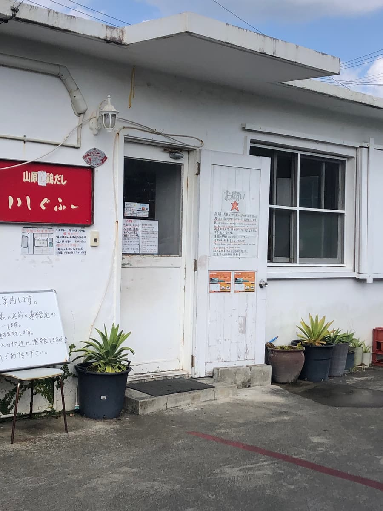
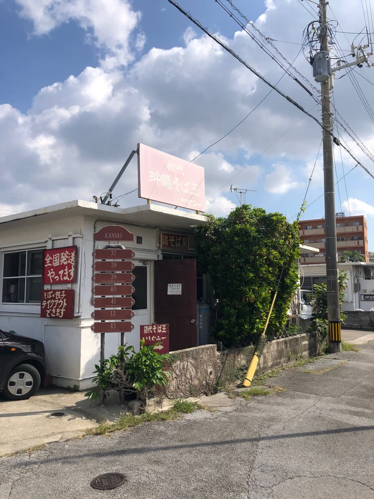
The menu is packed in all over the shop. From the standard chicken soba to creative, unusual variations, there's plenty to choose from 👇 (I'm introducing just part of the menu)
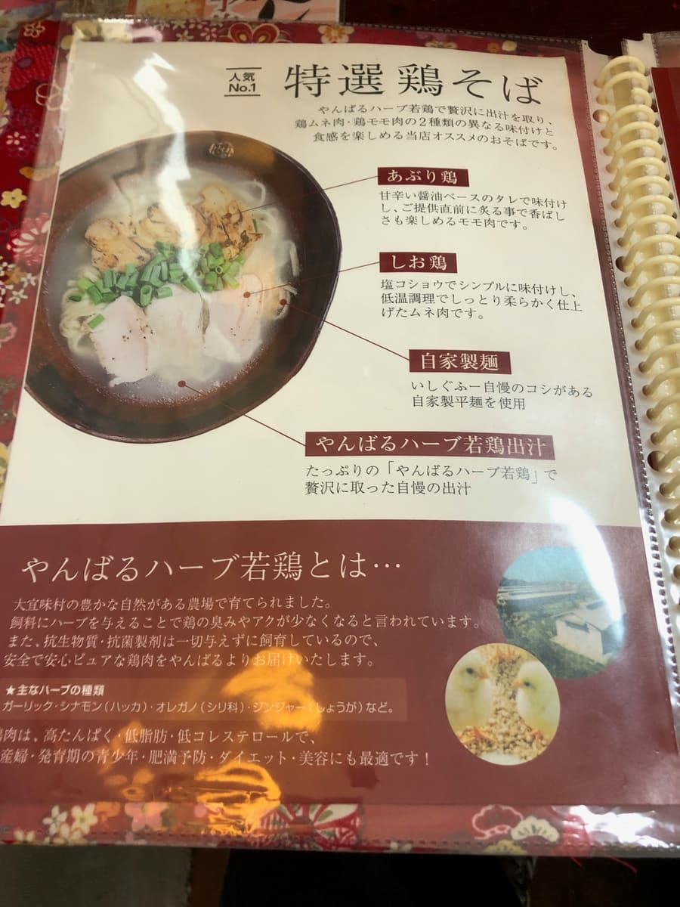
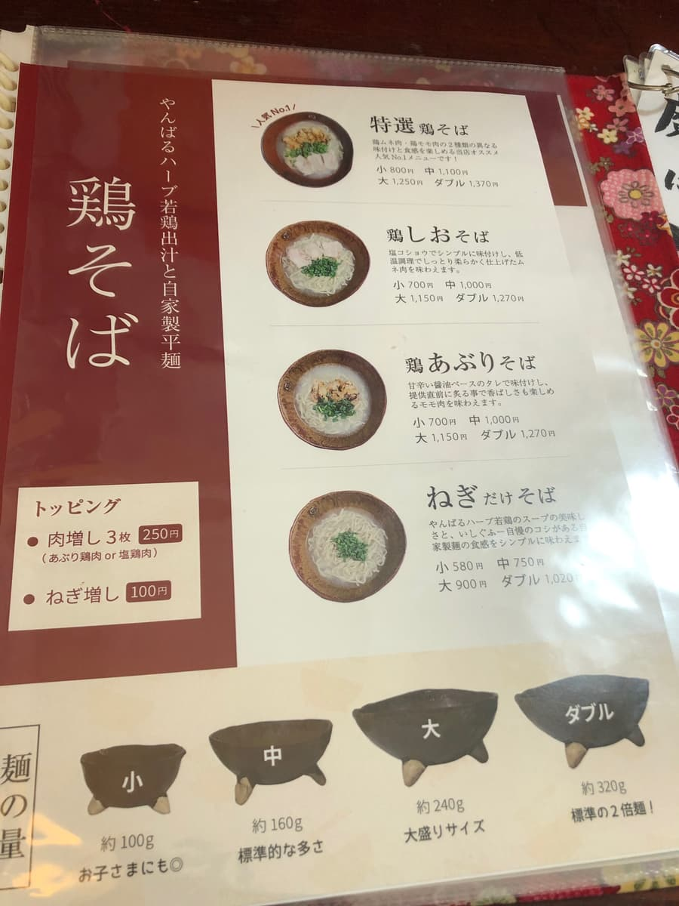
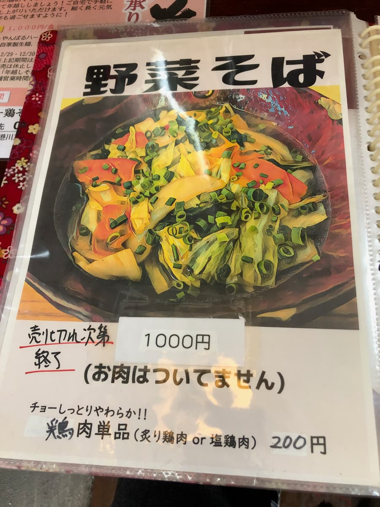
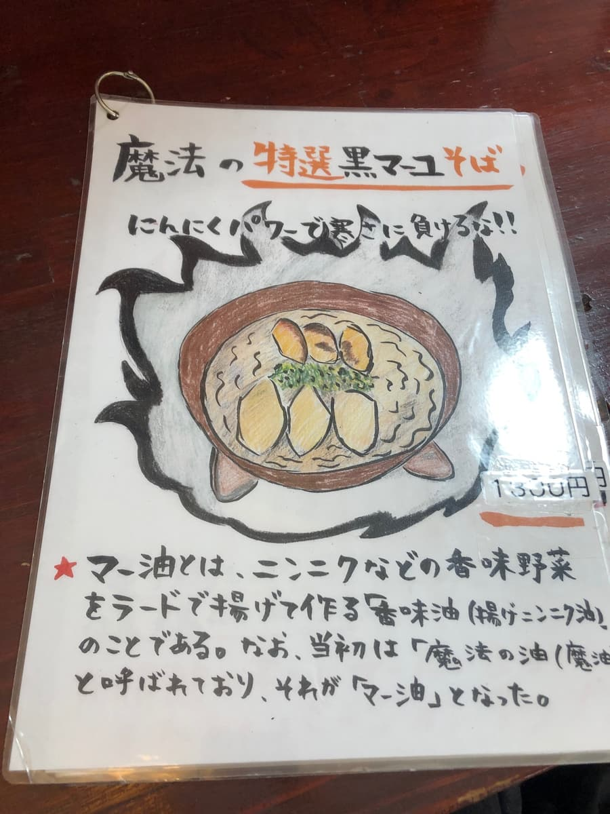
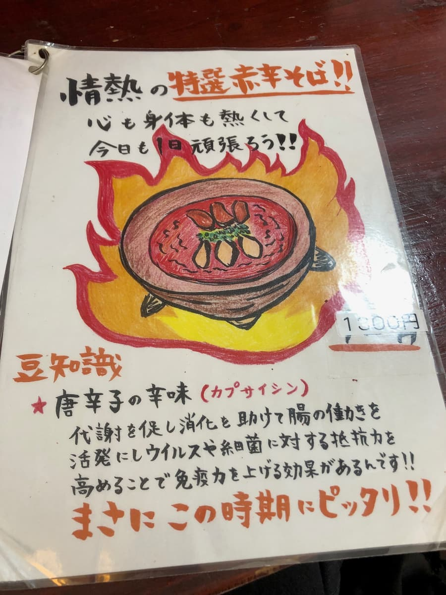
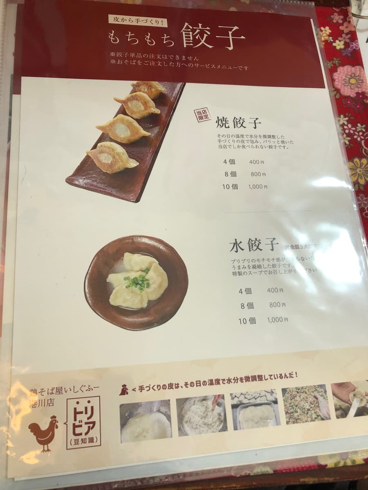
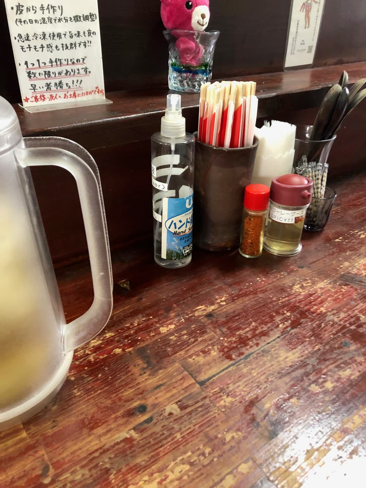
Now, what I ordered this time was the shop's top pick, the "Special Chicken Soba (medium)"! 🥢 In the bowl that was brought to me, in a clear chicken soup, shining in-house noodles, two kinds of chicken chashu (salt chicken and seared chicken), and vivid green onions were topped. Just from the look of it, it already feels like a winner ✨
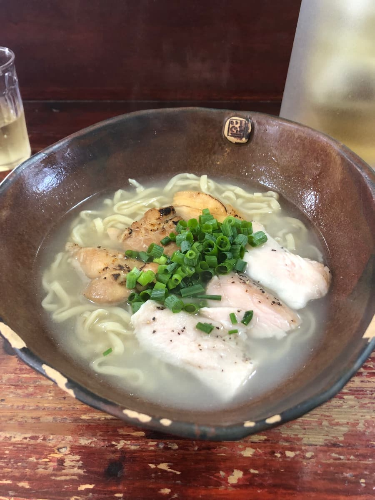
First, a sip of the soup... Mmm, it's delicious! 😋 This tastes more like a high-quality salt ramen than Okinawa soba. The broth made from Yanbaru herb young chicken has a perfectly balanced saltiness, and while it's refreshing, the umami of the chicken comes rushing in. I can't stop with my soup spoon with this soup 😆
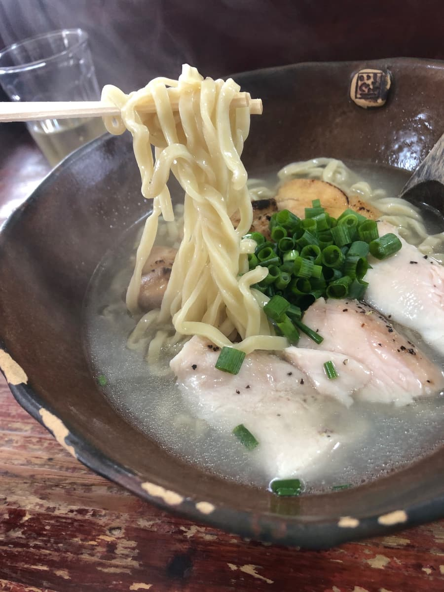
Next, the noodles. The in-house flat, wavy noodles are chewy and supple and pair superbly with the soup. Among the Ishigufu group, some shops finish the noodles a bit firm, but the noodles at the Minatogawa shop were just the right doneness. They have springiness while also being gentle on the palate, the type I'd recommend to anyone.
The salt chicken chashu topping is gently seasoned with a salty touch, moist and tender. A faint herb aroma gives it an elegant impression. The other one, the seared chicken, is fragrantly soaked in a sweet-and-salty soy sauce glaze, with a slightly punchy taste. Both had different personalities and were enjoyable, but personally I preferred the salt chicken 😊
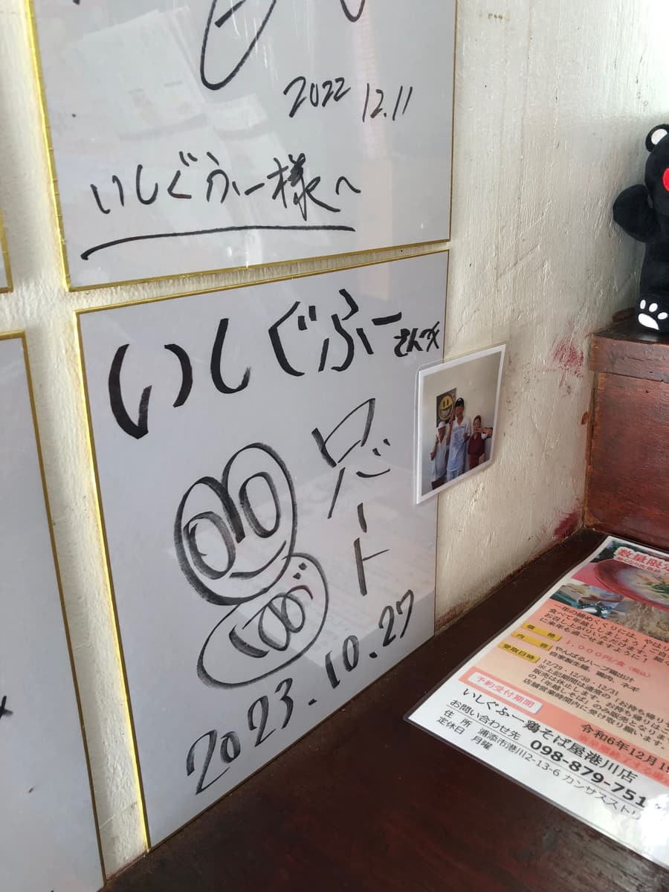
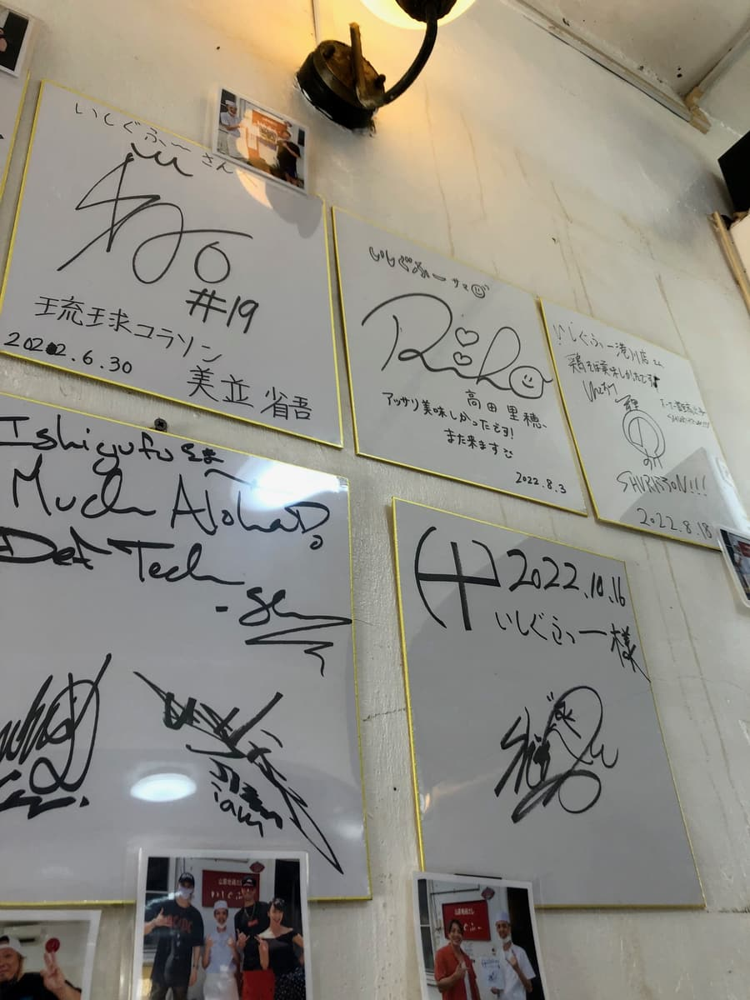
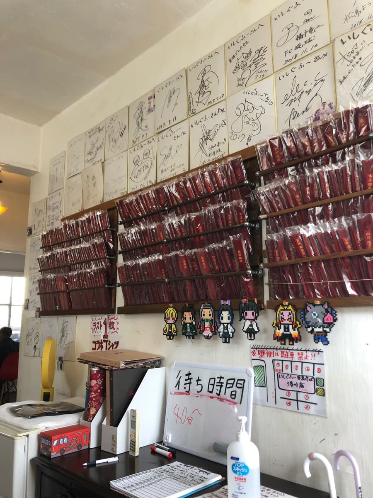
The interior has rows of autograph cards lined up, and you can tell many famous people visit. Anime and game pixel-art-style characters are also displayed on the walls, giving the shop a bit of a playful feel. The service was polite, and the atmosphere of the staff was warm.
However... the only drawback is "it gets so crowded!" The board inside the shop said "40+ minute wait," but I waited even longer 💦 Also, parking is limited, so if possible I recommend visiting on a weekday morning or at a time outside the peak.
Rating (13.5/15): Overall, I felt the Minatogawa shop is especially well-polished even among the Ishigufu shops. The balance of broth, noodles, and toppings was wonderful, and it was a bowl that proposes a new style of Okinawa soba. It's a shop I'd like to keep coming back to, and it's officially registered as a "Recommended Shop" ✨
Noodles: ★★★★✬（4.5）
Soup: ★★★★✬（4.5）
Toppings: ★★★★✬（4.5）